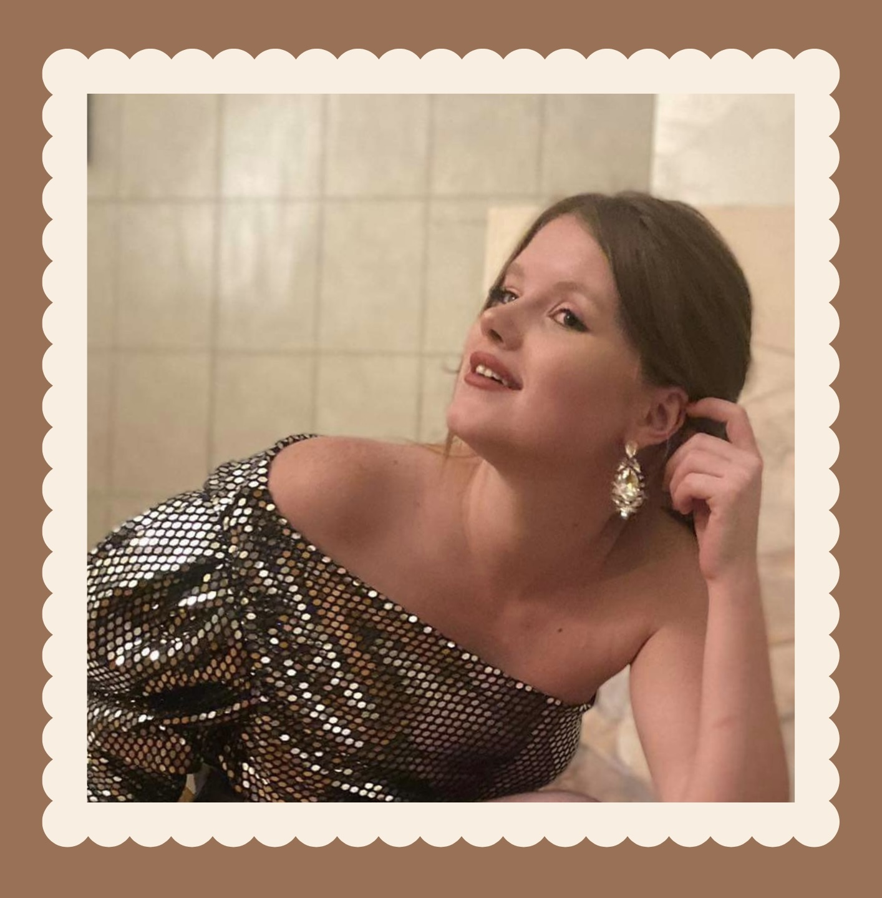

profil
Travailleuse dévouée et passionnée,
je m'investis corps et âme dans chaque projet.
Depuis longtemps, je recherche un métier qui allie
toutes mes compétences et ma soif de défis.
Mon dévouement et ma capacité d'adaptation seront
des atouts précieux pour toute organisation dynamique.
contact
chloehamoir@gmail.com
0497.202079
Liège
intérêts
- voyage
- lecture
- dessin
- famille
langues
- Francais : langue maternelle
- Anglais : bonne maitrise
- espagnol: très faible
HAMOIR Chloe
Formations
- 2016-2021: Haute éccole de la province de liège
bachelier en kinésithérapie. - 2015-2016 : Université de Liège
1er bachelier en médecine vétérinaire - 2015: optention du CESS
langue moderne anglais et sciences fortes.
Expériences
- 2022-2024: mi-temps à la Valaisanne, Liège
barman/serveuse salle. - 2016-2022: job etudiant à la Valaisanne, Liège
extra serveuse salle. - 2016 : job etudiant Activate , Liège
démarcheuse porte à porte - 2015: job étudiant à La maison du Peket, Liège
extra barman/serveuse salle. - 2014: job étudiante chez Quick, Boncelle
caissière - 2012: job étudiant pour la commune de Seraing
travaux divers
Qualités
- sociable
- créative
- ambitieuse
- autonome